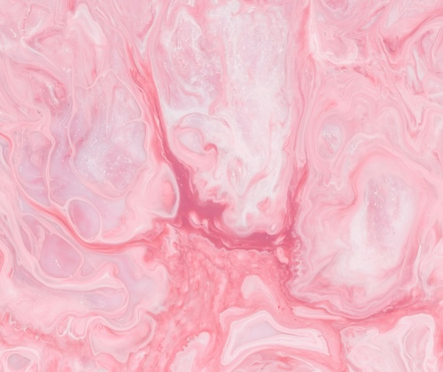
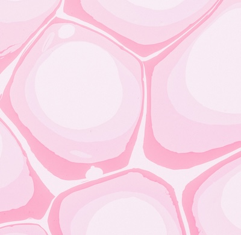
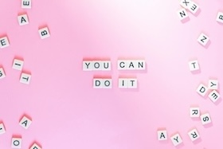

Word of Threads is my outlet to express my creativity through crochet. I create a variety of items that sometimes do not make sense to each other. I lean most towards blending functionality with aesthetics, this isn’t always the case but I love it when the things that bring me joy also have a purpose.


At the age of six, my grandmother chose to teach me how to knit and my sister how to crochet. Constantly at a beginner's level, I felt stuck with only being able to knit a blanket. In 2022, my aunt gave me her crochet rug for me to take back to the U.S. and learn how to make with just that reference. I'm now an undergraduate in university and I have stuck with crochet as a medium since then.